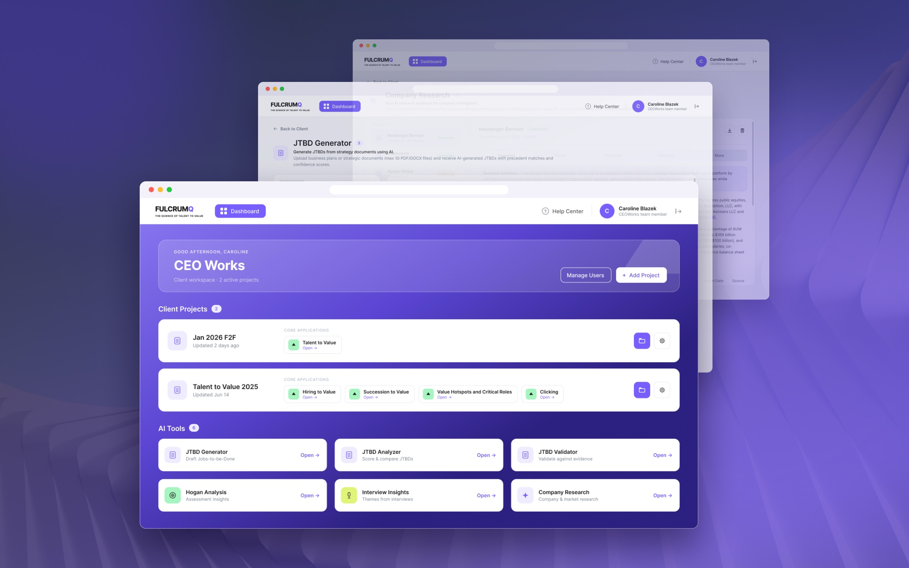
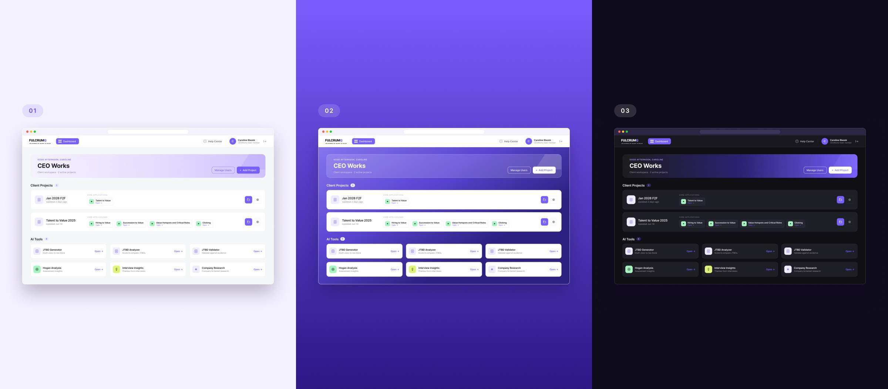
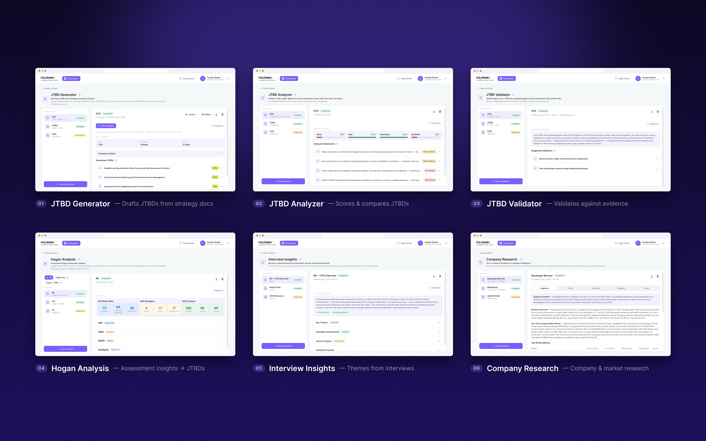
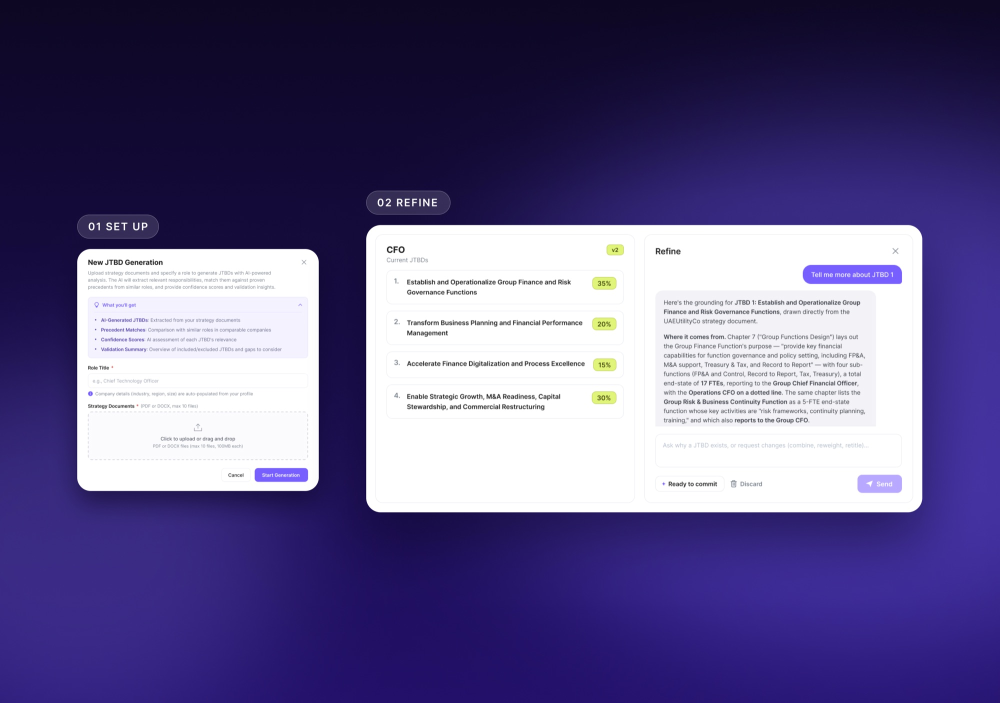
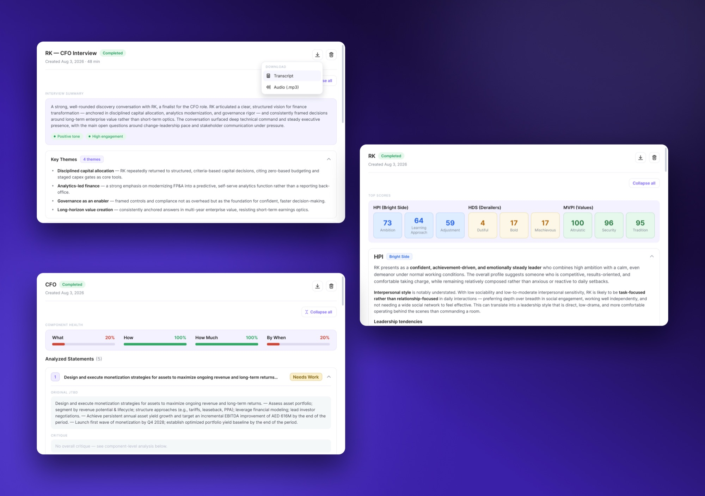
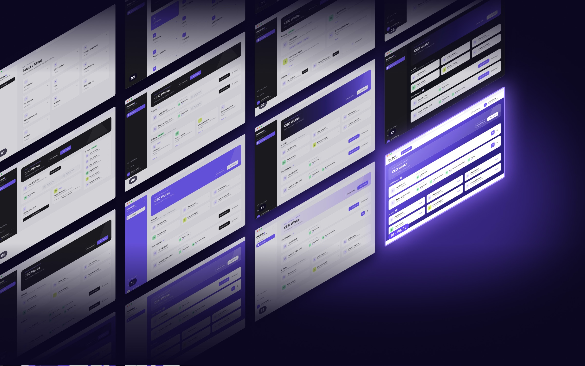
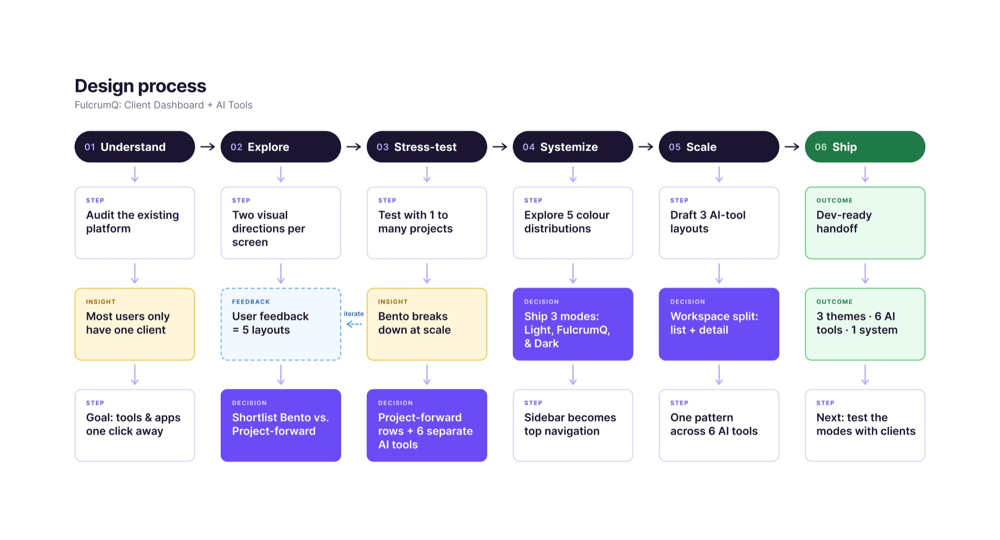

FulcrumQ
- UX Design
- Information Architecture
- Design Systems
As a UX & Product Design Intern at FulcrumQ, I redesigned the client dashboard and designed six AI-powered tools used by consultants to analyze talent and organizational performance. The project focused on making a complex platform easier to navigate while creating a more consistent experience across its different tools.
Working closely with my advisor, developers, the CEO, and other team members, I explored dashboard layouts, established a shared visual system, and designed detailed interfaces for each tool. From early iterations to developer-ready Figma screens, my work covered both the overall platform experience and the individual workflows within it.

Objective
FulcrumQ’s existing dashboard required users to select a client before reaching their projects, even though most users worked with only one client. Core applications were tucked inside individual projects, while AI tools lived in the sidebar, making important features less direct to access. The result was a fragmented experience, particularly for workspaces with only one or two projects.
My goal was to bring core applications and AI tools closer to the client landing page, reduce unnecessary navigation, and create a layout that could accommodate different numbers of projects and applications. The dashboard also needed to express the FulcrumQ brand while maintaining clear hierarchy and legibility across a data-heavy interface.




Approach
I explored multiple dashboard directions, developing 16 iterations before narrowing the options to a Bento-style layout and a project-forward list. I tested both against realistic scenarios, from a single project with one application to workspaces containing multiple projects and mixed applications. The project-forward layout handled these variations more clearly, so I refined it with wrapping application chips, visible active applications, and a more direct hierarchy for tools and project actions.
With the dashboard structure established, I developed a shared visual system and explored different color treatments, navigation patterns, and theme options. I then designed six AI tools around a split workspace, with a run list on the left and detailed results on the right. Setup and refinement modals let users preview expected outputs and adjust AI-generated results, while shared components, status indicators, and typography kept the experience consistent across tools.
Results
I delivered developer-ready Figma screens for the redesigned client dashboard, including three visual themes and a top-navigation system, alongside detailed layouts and interaction specifications for all six AI tools. The updated dashboard removes the separate client-selection step, surfaces AI tools on the landing page, and lets users launch active core applications directly from project rows.
Across the platform, reusable components and shared interaction patterns create a consistent foundation without forcing every tool into the same content structure. The split workspace supports reviewing individual runs and their results, while the setup and refinement flows provide clearer points for users to understand and interact with AI-generated analysis. The handoff gave the development team a defined interface system to build from.
